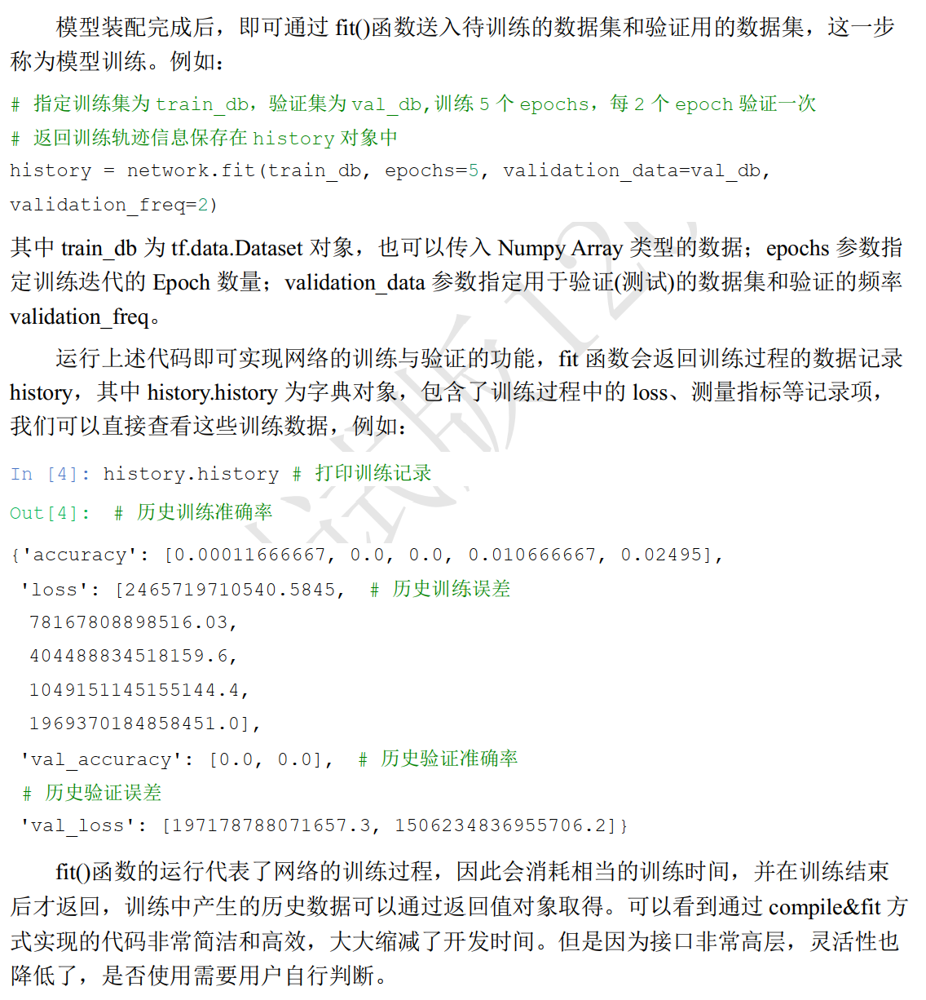
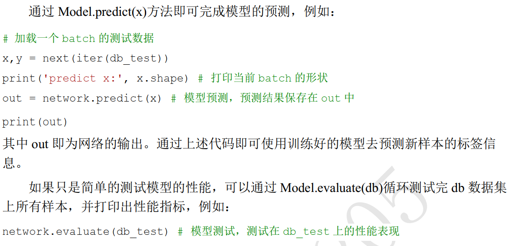
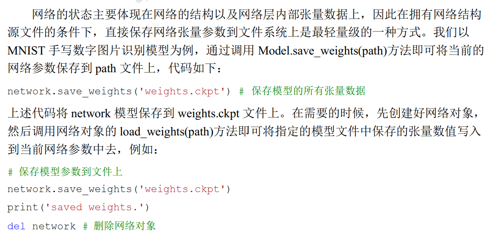
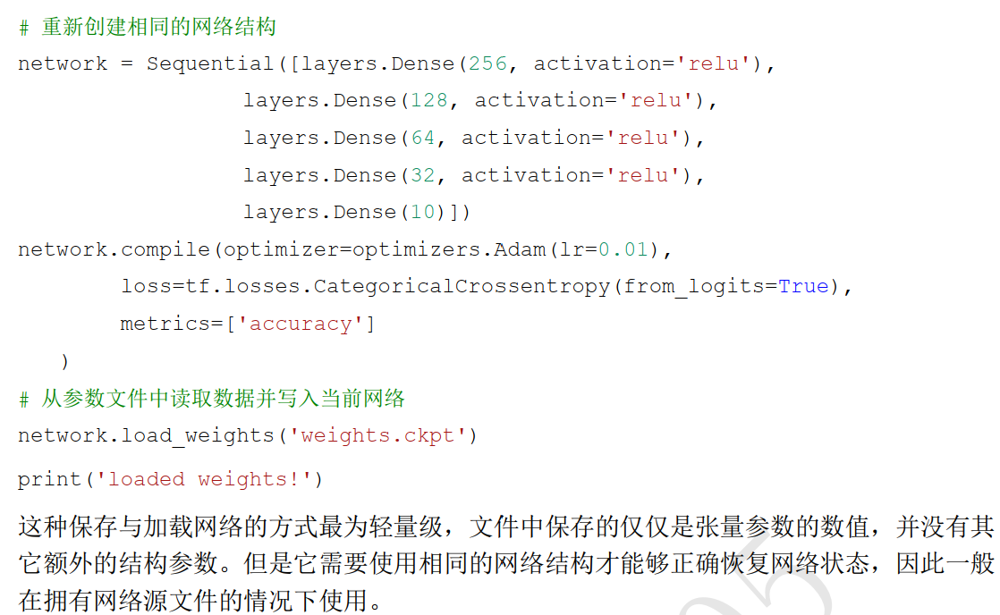
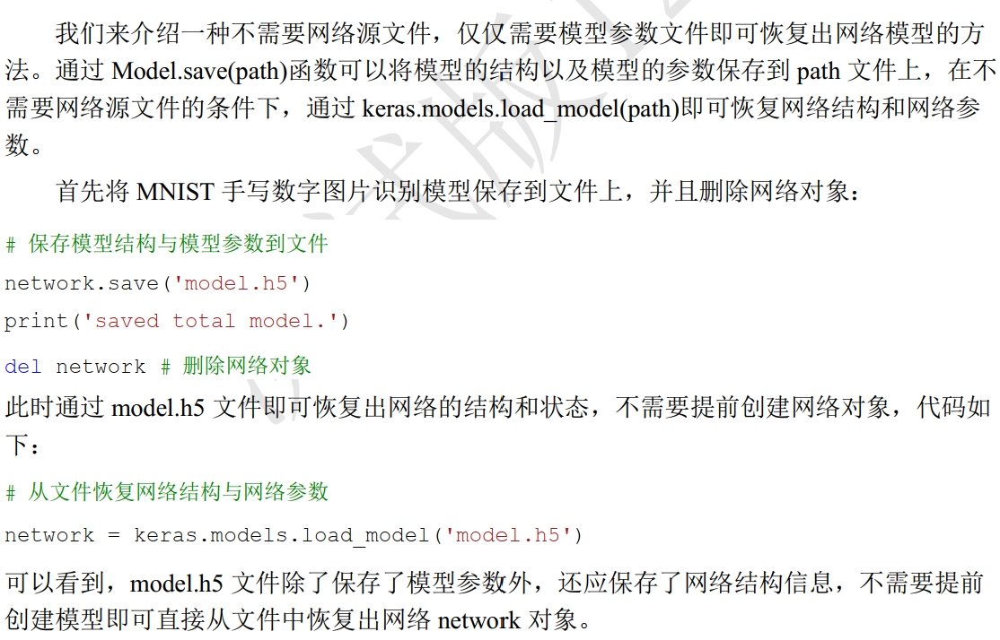
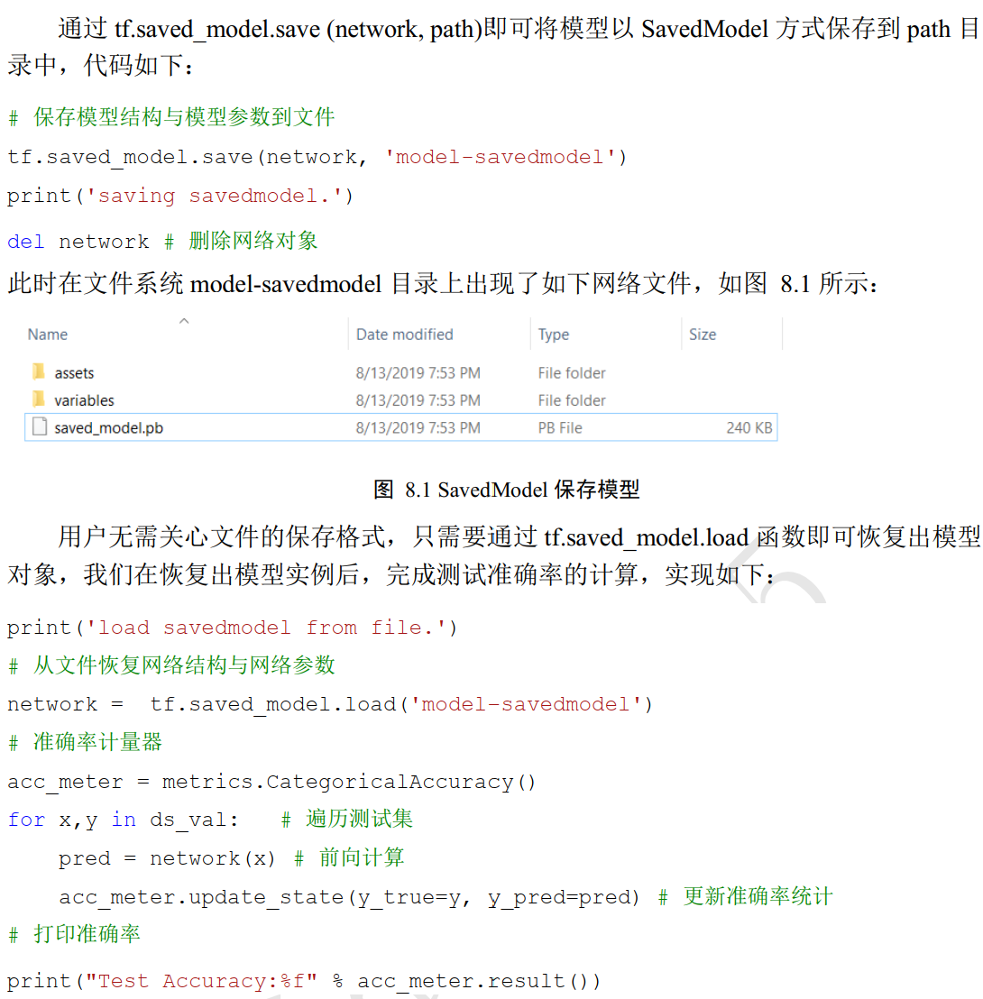

高层API:Keras
常见功能模块
常见网络层类
tf.keras.layers类中包含了全连接层、 激活函数层、 池化层、 卷积层、 循环神经网络层等常见网络层的类，可以直接使用这些类创建网络层，这里以softmax为例：
1 | import tensorflow as tf |
1 | x=tf.constant([2.,1.,0.1]) |
1 | out |
<tf.Tensor: shape=(3,), dtype=float32, numpy=array([0.6590012 , 0.24243298, 0.09856589], dtype=float32)>
当然，也可以使用tf.nn.softmax()函数计算
1 | out=tf.nn.softmax(x) |
1 | out |
<tf.Tensor: shape=(3,), dtype=float32, numpy=array([0.6590012 , 0.24243298, 0.09856589], dtype=float32)>
看，结果是一样的
网络容器
Keras提供的网络容器Sequential将多个网络层封装成一个大网络模型，只需要调用网络模型的实例一次即可完成数据从第一层到最末层的顺序传播运算
1 | from tensorflow.keras import layers,Sequential |
1 | out |
<tf.Tensor: shape=(4, 2), dtype=float32, numpy=
array([[0. , 0.84483266],
[0. , 0.4448954 ],
[0.6126369 , 0.30855933],
[0. , 0. ]], dtype=float32)>
可以通过add()方法追加新的网络层，实现动态创建网络
1 | from tensorflow.keras import layers,Sequential |
Model: "sequential_4"
_________________________________________________________________
Layer (type) Output Shape Param #
=================================================================
dense_12 (Dense) multiple 15
_________________________________________________________________
re_lu_12 (ReLU) multiple 0
_________________________________________________________________
dense_13 (Dense) multiple 12
_________________________________________________________________
re_lu_13 (ReLU) multiple 0
=================================================================
Total params: 27
Trainable params: 27
Non-trainable params: 0
_________________________________________________________________
Sequential 对象的 trainable_variables 和 variables 包含了所有层的待优化张量列表和全部张量列表
1 | for p in network.trainable_variables: |
dense_12/kernel:0 || (4, 3)
dense_12/bias:0 || (3,)
dense_13/kernel:0 || (3, 3)
dense_13/bias:0 || (3,)
第一层的shape为(4, 3)，因为输入是(4,4)，第一层的输出为(*,3)，于是自动检测到*为输入的4，所以该层参数的shape为(4,3)，同时bias也是shape为3
同理，第二层的 (3, 3)中，其输入为刚刚上一层的输出shape，即(4,3)，由于该层的输出shape为(*,3)，于是自动检测出*为3，所以该层参数的shape为(3,3)，同时bias的shape也是3
这种提前搭建好网络结构，最后一次性传入值的方式可以不在第一层指定输入维度的大小？
是的，因为使用了网络容器？
可以发现，这里的shape：(x,y)中，x和y其实是上一层的神经元个数和本层的神经元个数

模型装配、 训练与测试
模型装配
在 Keras 中，有 2 个比较特殊的类： eras.Model 和 keras.layers.Layer 类。其中 Layer类是网络层的母类，定义了网络层的一些常见功能，如添加权值、 管理权值列表等。Model 类是网络的母类，除了具有 Layer 类的功能，还添加了保存模型、加载模型、 训练与测试模型等便捷功能。
Sequential也是Model的子类
1 | network=Sequential([layers.Dense(256,activation='relu'), |
Model: "sequential_5"
_________________________________________________________________
Layer (type) Output Shape Param #
=================================================================
dense_14 (Dense) multiple 200960
_________________________________________________________________
dense_15 (Dense) multiple 32896
_________________________________________________________________
dense_16 (Dense) multiple 8256
_________________________________________________________________
dense_17 (Dense) multiple 2080
_________________________________________________________________
dense_18 (Dense) multiple 330
=================================================================
Total params: 244,522
Trainable params: 244,522
Non-trainable params: 0
_________________________________________________________________
各层的Param # 解释如下：
28*28 *256+256=200960
256*128+128=32896
128*64+64=8256
64*32+32=2080
32*10+10=320
现在进行模型装配
1 | from tensorflow.keras import optimizers,losses |
1 | # 采用 Adam 优化器，学习率为 0.01;采用交叉熵损失函数，包含 Softmax |
模型训练

模型测试

模型保存与加载
在Keras中，有3种方式
张量方式


网络方式

SavedModel 方式
当需要将模型部署到其他平台时，采用TensorFlow提出的 SavedModel 方式更具有平台无关性

自定义网络
仅仅使用Keras提供的接口固然方便，但是灵活性不强，所以有时需要自定义网络
对于需要创建自定义逻辑的网络层，可以通过自定义类来实现。在创建自定义网络层类时，需要继承自 layers.Layer 基类； 创建自定义的网络类时，需要继承自 keras.Model 基类， 这样建立的自定义类才能够方便的利用 Layer/Model 基类提供的参数管理等功能，同时也能够与其他的标准网络层类交互使用。
自定义网络层
对于自定义的网络层， 至少需要实现初始化__init__方法和前向传播逻辑 call 方法。 我们以某个具体的自定义网络层为例， 假设需要一个没有偏置向量的全连接层，即 bias 为0， 同时固定激活函数为ReLU 函数。 尽管这可以通过标准的 Dense 层创建，但我们还是通过实现这个“特别的”网络层类来阐述如何实现自定义网络层
1 | class MyDense(layers.Layer): |
1 | #实例化输入为4，输出为3个神经元的自定义层 |
1 | # 类的全部参数列表 |
[<tf.Variable 'w:0' shape=(4, 3) dtype=float32, numpy=
array([[ 0.8965106 , 0.5483446 , 0.6216595 ],
[-0.45314264, -0.00154513, -0.5543232 ],
[ 0.40444565, -0.27985066, -0.66103315],
[-0.16541952, 0.82652354, -0.9168886 ]], dtype=float32)>]
1 | #类的待优化参数列表 |
[<tf.Variable 'w:0' shape=(4, 3) dtype=float32, numpy=
array([[ 0.8965106 , 0.5483446 , 0.6216595 ],
[-0.45314264, -0.00154513, -0.5543232 ],
[ 0.40444565, -0.27985066, -0.66103315],
[-0.16541952, 0.82652354, -0.9168886 ]], dtype=float32)>]
可以看到𝑾张量被自动纳入类的参数列表
通过修改为 self.kernel = self.add_variable('w', [input_dim, output_dim], trainable=False)，我们可以设置𝑾张量不需要被优化，此时再来观测张量的管理状态
1 | class MyDense(layers.Layer): |
1 | #实例化输入为4，输出为3个神经元的自定义层 |
1 | # 类的全部参数列表 |
[<tf.Variable 'w:0' shape=(4, 3) dtype=float32, numpy=
array([[ 0.25570762, 0.81627464, 0.60139644],
[ 0.45930374, 0.49217367, 0.87035775],
[-0.0026539 , -0.05813193, 0.43993485],
[ 0.22716558, -0.19094968, -0.73896277]], dtype=float32)>]
1 | #类的待优化参数列表 |
[]
可以看到，此时张量并不会被 trainable_variables 管理
此外，在类初始化中创建为tf.Variable类型的成员变量也会自动纳入张量管理中
1 | class MyDense(layers.Layer): |
1 | #实例化输入为4，输出为3个神经元的自定义层 |
1 | # 类的全部参数列表 |
[<tf.Variable 'Variable:0' shape=(4, 3) dtype=float32, numpy=
array([[-0.8323358 , 0.59394956, -0.02408018],
[ 0.31579047, -1.4819138 , -1.163358 ],
[ 1.4938904 , -0.949228 , -0.80765593],
[-0.23702401, 2.0464106 , -1.0387905 ]], dtype=float32)>]
1 | #类的待优化参数列表 |
[]
接下来自定义的类的前向逻辑运算，代码更新如下
1 | class MyDense(layers.Layer): |
1 | #实例化输入为4，输出为3个神经元的自定义层 |
<tf.Variable 'w:0' shape=(4, 3) dtype=float32, numpy=
array([[ 0.0827105 , -0.20058179, -0.8756637 ],
[-0.29692435, 0.9056848 , -0.517593 ],
[ 0.5766784 , -0.7444072 , -0.06552321],
[-0.30638957, 0.2780875 , -0.51893866]], dtype=float32)>
1 | #试一下 |
<tf.Tensor: shape=(2, 3), dtype=float32, numpy=
array([[0. , 0.48991632, 0. ],
[0.2176385 , 1.4450493 , 0. ]], dtype=float32)>
自定义网络
自定义网络类可以和其他标准类一样，通过 Sequential 容器方便地封成一个网络模型
1 | network=Sequential([MyDense(784,256), |
1 | network.build(input_shape=(None,28*28)) |
1 | network.summary() |
Model: "sequential_6"
_________________________________________________________________
Layer (type) Output Shape Param #
=================================================================
my_dense_18 (MyDense) multiple 200704
_________________________________________________________________
my_dense_19 (MyDense) multiple 32768
_________________________________________________________________
my_dense_20 (MyDense) multiple 8192
_________________________________________________________________
my_dense_21 (MyDense) multiple 2048
_________________________________________________________________
my_dense_22 (MyDense) multiple 320
=================================================================
Total params: 244,032
Trainable params: 244,032
Non-trainable params: 0
_________________________________________________________________
这里和之前调用layers.Dense创建的网络几乎是一样的，区别仅在于自定义的网络没有加偏置项
下面开始创建自定义网络类
1 | class MyModel(keras.Model): |
1 | #实例化 |
1 | net.compile(optimizer=optimizers.Adam(lr=0.01), |
…
这里没看明白orz~
总结一下：我好菜啊